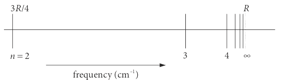

10 Modulo arithmetic, \delta functions, types of series & estimating quantities
Contents
10 Modulo arithmetic, \(\delta\) functions, types of series & estimating quantities#
# import all python add-ons etc that will be needed later on
%matplotlib inline
import numpy as np
import matplotlib.pyplot as plt
from sympy import *
init_printing() # allows printing of SymPy results in typeset maths format
plt.rcParams.update({'font.size': 16}) # set font size for plots
10.1 Modulo arithmetic#
Clock time is usually measured to base \(60\) for minutes, and \(12\) for hours. For example, if you arrange to meet someone at \(10:35\) and they are \(40\) minutes late, then rather than noting the time as \(10:75\) we say it is \(11:15\). This is an easy mental calculation expressed more awkwardly and mathematically as
Symbolically, if the difference between two integers \(a\) and \(b\) is divided by an integer \(m\), or \((a - b)/m\), and if the result is also an integer, then \(a\) and \(b\) are said to be ‘congruent modulo m’; hardly an expression that flows naturally off the tongue. As an identity, this is written as
which means that \(a\) is equivalent to \(b \text{ mod } m\). More familiarly, it means that integer division \(a/m\) produces the remainder \(b\); thus \(75/60 = 1\) with remainder \(15\). Integer division measures only how many times one integer goes into another, ignoring any remainder; thus \(3/2 = 1,\, 23/4 = 5\), and so forth.
However, the usage in most computer languages is different to this. In python this is written as
which means that \(a\) is the remainder of integer division of \(b\) by \(m\), this is equivalent to \(b-b//m\) where // means integer division.
In some computer languages this may be written as
and notice the = sign. The equation means that \(a\) is the remainder of dividing a positive number \(b\) by \(m\) a whole number of times. Using python gives
because integer division \(39/10 = 3\) with a remainder of \(9\).
When \(b\) is a negative integer, the result is the same as calculating \(m - (+b \text{ % } m)\). For example,
10.2 CAS registry number and Check digits#
An important example is found in the CAS registry number, which is used to uniquely identify every chemical compound. There are at least 35 million compounds known, so uniqueness is important. The last digit in the CAS number is a check digit, used to confirm the uniqueness of the number. The check digit is obtained by multiplying each preceding digit by its position in the number; taken in reverse order, starting by multiplying the last digit by \(1\), the second to last by \(2\), etc. then adding the result and calculating modulo \(10\) of the number produced. The CAS number for naphthalene is \((91 - 20 -3)\); the \(3\) is the check digit. This is obtained with the following sum, \(0 \times 1 + 2 \times 2 + 1 \times 3 + 9 \times 4 = 43 \) and finally, \(43 \text{ mod } 10 = 3\), where the \(3\) is the remainder of a whole number of divisions of \(10\) into \(43\).
In transmitting digital data, check digit information is added to ensure that the data has not been corrupted and is calculated as for the CAS example .
10.3 Musical scales#
Musical scales and clock time use circular arithmetic. The equal temperament scale has \(12\) frequencies in each octave given by \(2^{n/12}\) times the base frequency where \(n = 0 \to 12\), this being the scale that most people find is most pleasing to their ears. The next octave, above or below, has exactly the same ratio of frequencies and so follows modulo \(12\) arithmetic.
10.4 Algorithm converting a decimal number to another base#
If we want to know what 123 in decimal is in octal (or any other base) the calculation can be done by starting at the beginning and working out what \(2,3,4\) etc are in the new base, which is hardly practical for a large number. We use modulo arithmetic and start with the decimal and cut it into parts. We have to use integer division which mean whole number division and ignoring any fractional value, thus \(3//2 = 1\) where \(//\) means integer division. In comparison \( 3 \text{ mod } 2 = 1\) which is the remainder.
An algorithm to do this is
(1) modulo the number with the base and save the result,
(2) use integer division on the number with the base and make this the new number,
(3) repeat from step 1.
(4) print result in reverse order.
Modulo \(123\) with \(8\) is \(3\) calculated as integer division \(123//8 = 15\) then \(123-8 \times 15=3\). Next repeat this with \(15\) which gives \(15\mod\,8 = 7\) and integer division \(1\), reversing the order gives \(173\). Some code to do this is given below.
# convert a decimal number (num) to another base.
def convert_base(base,num):
newn= []
while num > 0:
rem = num % base # modulus
if rem > 9:
rem = chr(65 - 10 + rem) # make into letter if > 9, look up ascii code numbers
newn.append( rem )
num = num // base # integer division
pass
return newn
#------------------------
base = 8
num = 2130
ans = convert_base(base,num)
print(num,' in base ',base,' is ', ans[::-1] ) # [::-1] reverses order
2130 in base 8 is [4, 1, 2, 2]
11 Delta functions, Krokecker and Dirac#
The Kronecker delta is a function defined with two indices, and has a value of \(1\) when these are the same, and \(0\) when they are different.
This function is met when calculating the orthogonality of many functions with integer arguments, for instance, \(\sin(nx)\) and \(\cos(mx)\), see Chapter 9, and is commonly also found in quantum problems where it is often used to pick out one term in a summation;
The second type of delta function \(\delta(x)\) is named after Dirac. This behaves like a normal continuous function but has a positive value only at \(x\) and elsewhere is exactly zero. The area under the function, which is its integral, is unity. This means that the function is a spike at position \(x\) of infinitesimal width but unit area. Further properties of this function are described in Chapter 9. The Dirac delta can be derived in a number of ways, but the function may be realized by drawing a Gaussian (bell-shaped curve), then making it narrower and narrower until, at the limit, it becomes the \(\delta\) function.
Just as for the Kronecker delta the Dirac delta function can be used to extract values, in this case from an integral,
which can be seen as the delta function is zero except when \(x=a\).
12 Series: Arithmetic and Geometric progressions#
A series of numbers is \(1, 2, 3, 4 \cdots\) or \(1, 2, 4, 8, 16 \cdots\). If each term is made from the previous one by adding a constant number, this is an arithmetical progression. If, however, each term after the first is multiplied by a constant term, the series is called a geometrical progression. Both series may continue to infinity, but the last value may still be finite.
Examples of arithmetic progressions are
or in general
where the constant additional term is \(d\).
In the geometric progressions below, in \(G_1\), each term after the first is multiplied by \(1/2\), in \(G_2\) the multiplier is \(4\) and is \(x\) in \(G_x\).
The first of these three series, \(G_1\), converges to a finite value even after an infinite number of terms, and the sum of the terms to infinity is also finite.
The spectrum of atomic hydrogen and other atoms with one outer electron show an emission spectrum that converges to a limit. In the ultraviolet part of the spectrum, the lines are called the Lyman series and have the form
where \(n\) is an integer greater than \(1\) and \(R\) is the Rydberg constant, \(109678\) wavenumbers for hydrogen. The positions of the lines are sketched in figure 25. The symbol \(\bar \upsilon\) represents the frequency in wavenumbers or \(\mathrm{cm^{-1}}\). These are habitually used by spectroscopists rather than \(\mathrm{s^{-1}}\) (or Hertz) because the numbers are smaller, a few thousands of wavenumbers correspond to \(\approx 10^{13} \to 10^{15} \mathrm{s^{-1}}\), where \( 1 \mathrm{cm}^{-1} \equiv 3 \cdot 10^{10} \mathrm{s^{-1}}\).

Figure 25. The Lyman series converges to a finite value.
13 Estimation#
Estimating quantities is sometimes relatively easy to do and can often be used to help design experiments. An accurate number is not sought; just an order of magnitude estimate is often sufficient. A straightforward example is to estimate the minimum useful concentration of a sample knowing the sensitivity of an instrument. This can be put the other way around. At the maximum allowable sample concentration, we can estimate what the size of the signal will be and whether the method proposed will work or whether another more sensitive instrument should be used. Other forms of estimation can be used to obtain quantities that would otherwise seem impossible, such as calculating the weight of a mountain or the weight of the atmosphere. In these types of problems, we make some simplifying, but not unreasonable assumptions to be able to reach a sensible conclusion; the mountain could reasonably be approximated by a cone or a hemisphere depending on its shape. Several interesting estimation examples are given by Adam (2003).
13.1 X-rays#
In an X-ray experiment on crystalline Be, suppose that the detector(e.g.a CCD type camera) can respond to single X-ray photons; estimate the least number of electrons that there must be in the crystal’s scattering plane for a signal to be detected. What does this imply for the size of the crystal? (Assume that the scattering from \(n\) electrons is \(n\) times that from a single one and the following data is assumed to be known.) The fractional intensity, \(I/I_0\), of X-ray scattering by a single electron is approximately given by
where \(I_0 = 10^8\) is the initial number of X-ray photons per second, \(R\) the distance from the centre of scattering to a detector, and \(\phi\) the angle through which the X-ray is scattered. The detector is \(1\) m from the sample and at an angle \(\phi = 20^{\mathrm{o}}\).
In this example, although calculating \(I/I_0\) is straightforward it is not if you use a calculator because the powers produced are too large. The calculation is done by first adding the powers, then the remaining numbers are easily evaluated.
If the initial X-ray intensity is \(10^8\) photons/sec then \(\approx 10^{-21}\) X-rays are detected from each electron, which means that \(10^{21}\) electrons have to be present to detect one X-ray. As Be contains four electrons, \((1/4) \cdot 10^{21}\) atoms are needed, which is \(10^{21}/(4 \times 6 \cdot 10^{23}) \approx 4\cdot 10^{-4}\) moles. The molar mass is \(9\) g mol\(^{-1}\), thus, to detect 1 photon/second, the sample has to weigh at least \(0.0036\) g and as the density of Be is \(1.8\;\mathrm{g\; cm^{-3}}\) this is a cube of volume \(0.0036/1.8\) cm\(^3\) which has a side of \(\approx 0.13\) cm which is not large.
13.2 Mass of atmosphere#
Sometimes, a particular estimation seems to be very hard but it turn out not to be. To calculate the mass of the atmosphere would appear to be difficult because of the changing density with increasing altitude. However, if atmospheric pressure is taken at sea level to be \(1\; \mathrm{atm} = 101325\) Pa all that is needed is the surface area of the earth and the fact that a pascal is a N m\(^{-2}\) which is force/area. Assuming that the earth is a sphere of radius \(6378\) km, its surface area is
and the total force on its surface due to the atmosphere is
The atmospheric mass is therefore \(\approx 5.18 \cdot 10^{19}/g = 5.27 \cdot 10^{18}\) kg where \(g\) is the acceleration due to gravity \(9.81\) m s\(^{-2}\).
13.3 Benjamin Franklin and a pond#
The American Benjamin Franklin is famously remembered for flying a kite with an attached wire into a thunderstorm in an attempt to capture lightning and store it in a Leyden jar (Bernal 1973). Luckily, he survived. He is less well known for changing the florid opening of the American Constitution to read ‘We hold these truths to be self - evident, that all men are created equal’. He travelled to England in 1757 to help with the tax situation of Pennsylvanians, and while sailing noticed that oil on water calmed waves, something that had been noticed since the time of the Greeks. Being interested in surface phenomena, when again in London in 1770, he poured no more than a teaspoon of oil on a pond on Clapham Common and observed that the oil spread of its own volition over the pond, sweeping leaves and other debris out of the way as it did so. He estimated that the oil covered about half an acre of the pond (\(2023\;\mathrm{m^2}\) ), and he repeated this experiment everywhere he went from then on. He also recorded seeing colours due to thin film interference effects but could not have explained this, nor could he have realized that a monolayer of molecules was formed because the idea of atoms and molecules was not clearly understood at that time. He appears not to have worked out the thickness of the oil layer.
To calculate the monolayer thickness, a teaspoon holds approximately 4.5 ml and half an acre is \(2023\;\mathrm{ m^2}\). From the amount of oil used, the thickness of the layer was \(4.5\cdot 10^{-6}\; \mathrm{m}^3/2023\; \mathrm{m}^2 =2.2\) nm. This is approximately the thickness of a close-packed, one-molecule thick layer of a long chain fatty acid monolayer, and gives a simple and direct estimate of the length of the oil molecules used. Oleic acid is a major constituent of olive oil and is a by-product of making candles; it has an 18-carbon chain so when fully extended would be about 2.8 nm long, remarkably similar to our estimate.
13.4 Size of atom#
If the density of Li is \(0.534\,\mathrm{ g\, ml^{-1}}\), what is average size of an atom? A mole contains \(6.022 \cdot 10^{23}\) molecules, therefore \(6.9\) g (the molar mass) contains this number of atoms occupying a volume
or \(2.18 \cdot 10^{-2}\, \mathrm{nm}^3\). Assuming spherical atoms, each has a radius \(0.17\) nm which is not a bad estimation considering the approximate nature of the calculation. The similar calculation for Pb produces \(0.19\) nm.